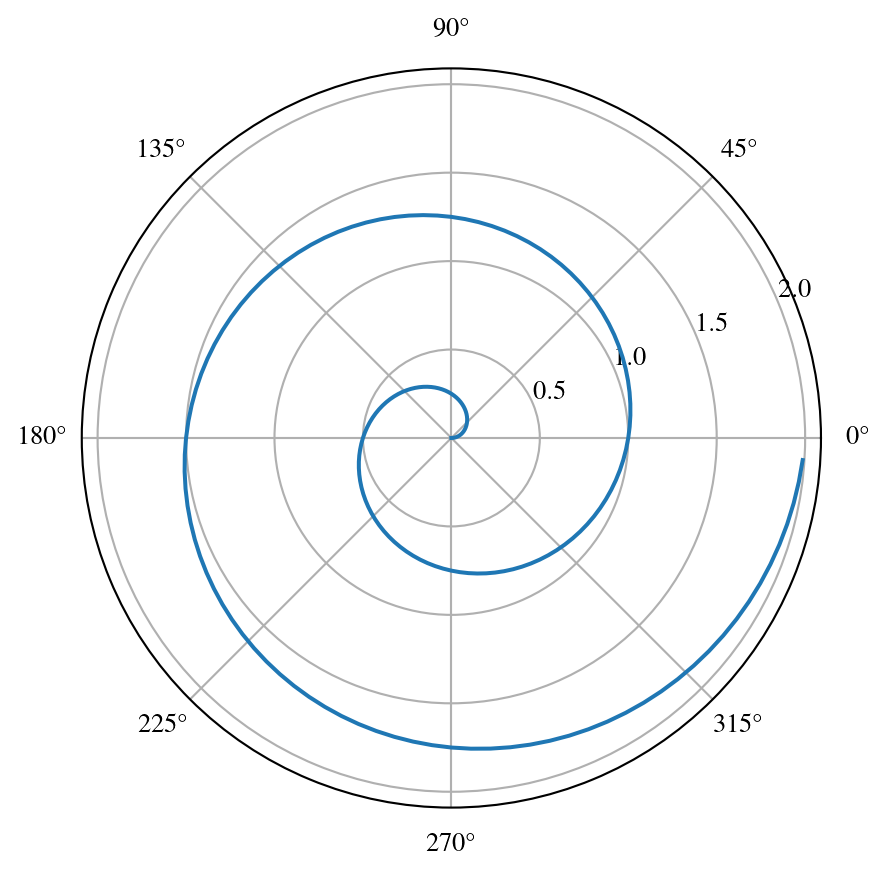
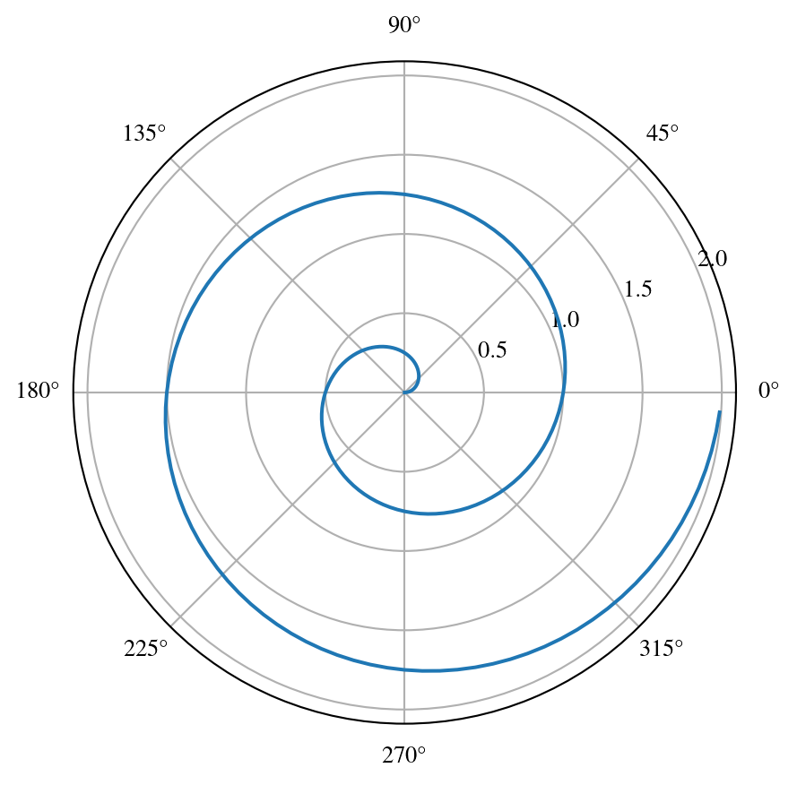

import numpy as np
import matplotlib.pyplot as plt
r = np.arange(0, 2, 0.01)
theta = 2 * np.pi * r
fig, ax = plt.subplots(subplot_kw={'projection': 'polar'})
ax.plot(theta, r)
ax.set_rticks([0.5, 1, 1.5, 2])
ax.grid(True)
plt.show()
Testing stuff
Turn on Math
\(Ax=b\)
Cauchy-Shwarz
\[\left( \sum_{k=1}^n a_k b_k \right)^2 \leq \left( \sum_{k=1}^n a_k^2 \right) \left( \sum_{k=1}^n b_k^2 \right)\]
\[\mathbf{V}_1 \times \mathbf{V}_2 = \begin{vmatrix} \mathbf{\hat i} & \mathbf{\hat j} & \mathbf{\hat k} \\ \frac{\partial X}{\partial u} & \frac{\partial Y}{\partial u} & 0 \\ \frac{\partial X}{\partial v} & \frac{\partial Y}{\partial v} & 0 \end{vmatrix} \]
#| echo: true
using GLMakie
Base.@kwdef mutable struct Lorenz
dt::Float64 = 0.01
σ::Float64 = 10
ρ::Float64 = 28
β::Float64 = 8/3
x::Float64 = 1
y::Float64 = 1
z::Float64 = 1
end
function step!(l::Lorenz)
dx = l.σ * (l.y - l.x)
dy = l.x * (l.ρ - l.z) - l.y
dz = l.x * l.y - l.β * l.z
l.x += l.dt * dx
l.y += l.dt * dy
l.z += l.dt * dz
Point3f(l.x, l.y, l.z)
end
attractor = Lorenz()
points = Observable(Point3f[])
colors = Observable(Int[])
set_theme!(theme_black())
fig, ax, l = lines(points, color = colors,
colormap = :inferno, transparency = true,
axis = (; type = Axis3, protrusions = (0, 0, 0, 0),
viewmode = :fit, limits = (-30, 30, -30, 30, 0, 50)))
record(fig, "lorenz.mp4", 1:120) do frame
for i in 1:50
push!(points[], step!(attractor))
push!(colors[], frame)
end
ax.azimuth[] = 1.7pi + 0.3 * sin(2pi * frame / 120)
notify.((points, colors))
l.colorrange = (0, frame)
endFor a demonstration of a line plot on a polar axis, see Figure 3.1.
import numpy as np
import matplotlib.pyplot as plt
r = np.arange(0, 2, 0.01)
theta = 2 * np.pi * r
fig, ax = plt.subplots(subplot_kw={'projection': 'polar'})
ax.plot(theta, r)
ax.set_rticks([0.5, 1, 1.5, 2])
ax.grid(True)
plt.show()
import numpy as np
import matplotlib.pyplot as plt
r = np.arange(0, 2, 0.01)
theta = 2 * np.pi * r
fig, ax = plt.subplots(subplot_kw={'projection': 'polar'})
ax.plot(theta, r)
ax.set_rticks([0.5, 1, 1.5, 2])
ax.grid(True)
plt.show()
#| label: xarray plot
#| fig-cap: "xarray demo"
import xarray as xr
import numpy as np
import matplotlib.pyplot as plt
import cartopy.crs as ccrs
from matplotlib.animation import FuncAnimation
variables=['u-component_of_wind_height_above_ground','v-component_of_wind_height_above_ground']
dsw=xr.open_dataset('https://thredds.ucar.edu/thredds/dodsC/grib/NCEP/GFS/Global_0p25deg/Best')[variables]
from datetime import datetime, timedelta
starttime=datetime.utcnow()
starttime
inittime = datetime.utcnow().date().isoformat() ### Simulation startime..
endtime = starttime + timedelta(days=10)
finaltime=endtime.date().isoformat()
print(inittime)
print(finaltime)
lat_toplot = np.arange(5, 35.25, 0.25) # last number is exclusive
lon_toplot = np.arange(260, 310.25, 0.25) # last number is exclusive
dataw= dsw.sel(time1=slice(inittime,finaltime),height_above_ground2=10, lon=lon_toplot, lat=lat_toplot)
u10=dataw['u-component_of_wind_height_above_ground'].values
v10=dataw['v-component_of_wind_height_above_ground'].values
lon=dataw.lon.values
lat=dataw.lat.values
l=10
U10=u10[l,:,:].squeeze()
V10=v10[l,:,:].squeeze()
vec_crs = ccrs.RotatedPole(pole_longitude=180.0, pole_latitude=90.0)
#central_rotated_longitude=0.0)
data_crs=ccrs.PlateCarree()
#print(dataw.time1[l])
fig = plt.figure(figsize=(20, 5))
ax1 = fig.add_subplot(1, 1, 1, projection=ccrs.PlateCarree())
ax1.set_extent([260, 311, 4, 40], crs=ccrs.PlateCarree())
ax1.coastlines()
magnitude = (U10 ** 2 + V10 ** 2) ** 0.5
#magnitude.shape
ax1.streamplot(lon, lat, U10, V10, transform=vec_crs,
linewidth=2, density=2, color=magnitude)
ax1.quiver(lon[::5],lat[::5],U10[::5,::5],V10[::5,::5],scale=200.0,color='b',transform=data_crs)
plt.savefig('foo.png', bbox_inches='tight')
plt.show()2023-12-22
2024-01-01